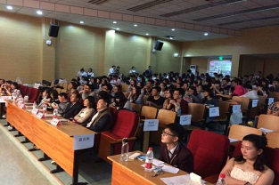

邂逅文澜
不知不觉，成为文澜网络的一份子已经近两年，我从什么也不懂的萌新成为了大二的师兄师姐，在部门的时光里，我收获了珍贵的友谊，也学会了不少技能。
一、初识
第一次知道文澜网络，是在成为大一新生的第一周。当时的我，对大学的一切都充满好奇，充满探寻与求知欲，什么都想体验，什么都想尝试。记得招新的时候，面对众多迎新的部门，我犹豫不决。一天下来，手里拿了不少招揽干事的传单，却并不知道自己喜欢什么、参加什么。那天回宿舍，我却被桌上的一张传单吸引了——《文澜网络技术部招贤纳士》。传单做的非常精美，每个部门负责的具体事宜，可以收获的技能都写的清清楚楚。其中，技术部的部门介绍最为幽默生动，作为一名信管专业的学生，“技术”两字便足够吸引人，既能在喜爱的部门里做事，又能认识到有共同兴趣爱好的朋友，还能获得一定的专业技能，何乐而不为呢？第二天我便联系了师兄师姐，向代码组递交了我的入职申请表。还记得文澜网络的宣讲会与信管院的宣讲会撞在了同一时间，我仔细抉择后参加文澜网络的会议——因为这正是我想去的。面试分为三轮——初试、复试、终试。初试和复试都是面试的形式，讲一讲自己关于的爱好，对技术的认知，对未来的打算等等。终试给了一周时间，学习网页的简单知识，限时修改某一个网页的样式。经过层层选拔，我通过了考核，很荣幸加入了这个大家庭。
|  |
二、相遇相知
回想这两年的时光，部门带给了我非常非常多。在文澜技术部，我认识了我最好的朋友——苏静微。她是工商学院的学生，进入代码组是她对自我的一次探索与尝试。由于大一与大二不在同一校区，开会时需要搭城际往返，我们便彼此结伴相行，原本孤单的旅程变得充实而愉快。我们俩的成长环境不同，对人生也拥有不同视角的理解与体会，和她的交谈敞开了心扉、开拓了视野。疫情期间，我们仍然经常聊天，彼此的友谊不减反增。除了友情，自然便是学业方面的督促，师兄师姐也是信管院的，结识他们就像是结识有经验的前辈。在师兄师姐的指导下，我的网页编程水平提高了很多。并且不仅仅是网页编程，在其他课业、赛事经验、学习方法方面师兄师姐也帮了我很多。还记得大一的暑假，收到师姐的贺卡和苹果时，内心不知道多么开心。
在大一下学期，我与部门里的其他四位同学一起完成了圣诞节网页的编写，两位同学负责ps界面设计，三位同学负责html网页实现。我主要实现了首页、 Origins并合作完成了Songs。现在看来网页的漏洞非常多，比如将css样式写在了html内部，样式单一且命名复杂等等，但仍然觉得十分开心，因为代码是自己认认真真写的，每每打开网页自豪之情都会涌上心头。
三、尾声
大二即将结束，前段时间师兄问我留部吗，我斟酌之后决定不留下。大三的我会将重心更多地放在学习、比赛上，所以不再参与部门的事情了。虽然我即将不再是文澜技术部的一份子，但我的心仍然是文澜的，我与文澜网络技术部的故事远远没有结束……